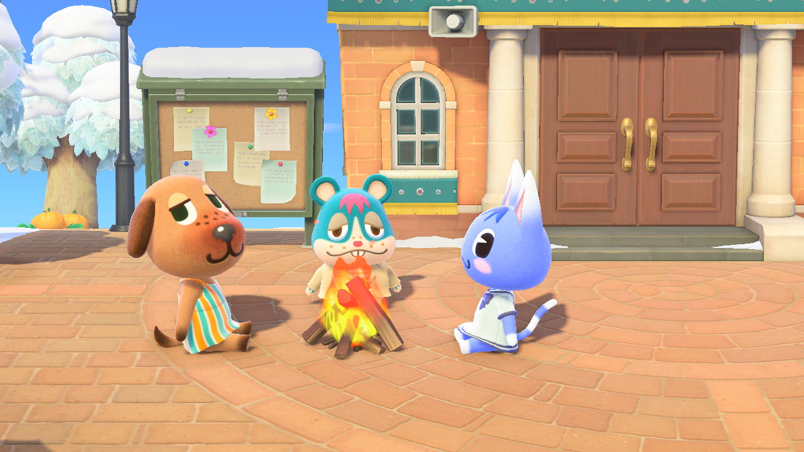

Bea, Rodney, and Rosie at this fire that appeared at my plaza randomly
an original vampire character that I made while I was really into
tw
ilight. She started as a youtuber joke character, but has evolved into a more nuanced specimen. That glum-looking
l
ittle angel is her love interest, Mulciber. You can read a little more about their lore
and stuff here.
this is literally just doctor who fanart, but it is special because it
is from requests I took on my instagram.
more doctor who fanart (can you tell who my favorite is?) but this time it is n
ice and colored with copics :)
nothing to see here, just me lamenting about acne as well as life drama. Seriously though, those hydrocolloid
band-a
ids are amazing for zits.
here is lilly again, colored this time. The purple girl is my
D&D character, Feilx. She sometimes goes by a different name but Felix is the one that matters. I go through phases where I'll draw her all the time and then stop for months.
Here's a Lilly that I colored and finally made me resign to the fact that I am super bad at design
ing clothes. You can also see my doctor who ship biases potentially in this one, but
for the offic
ial record I am a big fan of nine/rose
I cannot remember the context of this drawing to save my life... sorry ya'll
Here we go! the selfies! I love the way that I draw myself, and in particular that blue pencil
is an underrated gem. I have good memories associated with these draw
ings as well, I drew them when I was with friends a bit ago and we played jackbox games.
some more blue pencil sketches from the game night, the dog ones are my friend's new dog named Rocco, he is quite
sweet and named after an architectural style. I am personally a big fan of this dog because he is mellow and pol
ite, and he has a funny face.
i draw these circles when i am feelvng overwhelmed and need to draw, but have no idea what to draw. As you can see i messed a few of them up, but that's life.
This is a little doodle of me in an outfit that I like a lot,
it is shapeless and goofy but it makes me feel super good. Unfortunately the shirt has toothpaste on it r
ight now though...
some little outfit designs for Felix that are relevant to her lore (which I do not care
to explain right now because it is a long story with multiple timel
ines).